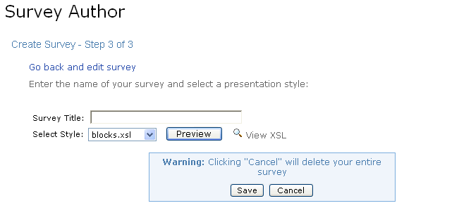
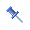

Survey Channel
Looking for more help options? Click Here
The Academus Survey features are delivered by three channels:
- Survey Author Channel
- Survey Channel
- Poll Channel
Users can create surveys and polls to gather information from others in the community. These surveys can be authored in the portal environment (through the Survey Author Channel), or they can be imported as a pre-authored XML file.
Survey authors have the ability to limit the audience with whom they share the survey. This helps glean information from a specifically sought-after pool of respondents.
A survey's lifespan exists in two stages: authoring and distribution. During the authoring stage, no one will be able to answer the questions within the survey. Once the questions have been finalized, the author can choose to distribute the survey to a select group of users. Once distributed, surveys cannot be edited.

Survey Types
There are two types of surveys: Personal and Shared. A user who authors a Personal Survey is the only one who can edit the survey. In addition, only the author of a Personal Survey can view the survey's results. A Shared Survey, on the other hand, can be edited by anyone who is able to view it. Likewise, shared survey results will be visible to all users with access to the Survey Author Channel
Authoring SurveysAuthoring new surveys, elections or polls is a three step process.
- Select a survey creation method
- Import or author new survey questions
- Specify survey title and presentation style

Selecting the Start New Survey Option will display the create survey view, which is comprised of two sections: page and question.
To author the contents of a new survey, begin by creating pages
- In the page section, enter a title for Page 1 of the survey. A survey can consist of multiple pages. This can be useful in grouping questions with a similar theme.
- To add additional survey pages, click the Add Page link.
The question section is below the page section. Three types of questions are supported:
- Multiple choice (multiple answers can be chosen)
- Single choice (only one answer can be chosen)
- Text (answers must be typed into a text field)
For Multiple or Single Choice question types follow the steps below:
- Choose either a Column or Row layout.
- Select the number of responses to display for this question.
- Enter the Responses in each of the text fields supplied.
- Click Update.
- To link a specific response to a web page, enter the URL in the Link response to URL text field.
- To randomize the order in which the responses appear, check the Randomize response order check boxes. Leave all boxes unchecked to display the responses in a specified order. They will appear in the order entered on this page.
- Responses can be deleted at any time by clicking the Delete Response link.
- Once all responses have been entered, proceed to add additional pages, questions and/or sub-questions
For Text question types follow the steps below:
- Choose whether the text field should contain a single or multiple lines (text field or text area).
- Click Update.
- Enter the Question Text.
- Proceed to add additional pages, questions and/or sub-questions.
Once all questions have been authored, click Preview to view the survey as it will appear to respondents. Click Save to store the survey information and proceed to Step 3.
To complete the survey:
- Enter a Survey Title.
- Select a presentation style for the survey. This will give the survey a specific look and feel.
- Click the Preview button to preview the survey.
- When you are satisfied with all the survey questions, types of styles and content, click the Save button. The survey is not saved until you take this step! Any questions authored online will be lost if you cancel out of the process prior to saving.

|  | At this point, Personal surveys will not be visible to others until they are distributed. Shared surveys, however, can be distributed by other users who have access to the Survey Author channel. |
Once a survey has been authored, it needs to be distributed before other users can view it and answer the questions. To distribute a survey, go to the Survey Author channel and click the Publish button associated to the desired Survey.
There are two different types of surveys. Choose either a Public Poll or a Survey by selecting the audience for distribution.
Public Polls appear to all users in the Poll Channel. There is no limit to the number of times a user can submit a public poll. Likewise, all users will be able to view the results of any poll in the Poll Channel. To distribute a survey in this way, follow these steps:
- Select the method for distribution As a Public Poll by selecting the Radio Button.
- Give this specific distribution a name in the distribution title field.
- Click the OK button.
The Poll will now appear to all users in the Poll Channel.

Surveys appear in the Survey Channel. To distribute a survey in this way, follow these steps:
- Select the method for distribution As a Targeted Survey by selecting the Radio Button.
- To send a notification or email announcement about this survey to your audience, check the Notification and/or Email boxes.
- Now choose among three types of responses to be displayed in the results screen (Anonymous, Named, or Election).
- Anonymous response type surveys can be submitted multiple times per user. All responses will be counted towards the total, even if one user submits multiple responses. The results screen will not show the specific answers from each user.
- Named response type surveys can be submitted multiple times per user. However, only the most-recent responses will be saved. The results screen will show each user's specific answers.
- Election response type surveys can only be submitted one time per user. Once a user submits a survey of this type, it will disappear from their Survey Channel.
Next select the Recipients who will be eligible to complete the survey.
- Click the Add Recipients button.
- To choose group(s) of users to receive the survey, place a checkmark next to each desired group from the hierarchy displayed on the browse tab. Clicking the + icon next to a group name will expand the list group.
- To select individual users, click the Search tab. Enter search criteria Name, Title, Department, or Email. Check the boxes next to the users who should receive the survey.
Once all users and/or groups have been identified, click the Submit Selections button.
4. Give this specific distribution a name in the distribution title field.
You are now ready to distribute the survey. Click OK to publish the survey to the selected recipients.
Viewing Survey ResultsClick on the tab for the type of survey: personal or shared, then click the distribution title to view the results of a specific survey distribution.
In the results view, you may choose to view a summary of results or individual survey responses.

Closing a Survey Distribution
To close a survey distribution:
1.Click the Close icon (Envelope with red X) to the right of the survey distribution you wish to close.
2.The survey will no longer be available to recipients for response. The close survey icon will no longer appear for the distribution.
To print survey results:
1.Click the Print icon next to the survey distribution results you wish to print.
2.The results will open in a separate web browser.
3.Select Print from the File drop-down menu.
4.Click the Print button.
Before exporting survey results:
- Click the Export icon next to the survey distribution whose results you wish to export.
- Select the type of information you wish to export by selecting one of the options: Summary, Respondents, Details, or Details - Delimited.
- Click Export.
- Select a location on your computer where you would like to place the survey results.
- Once you are notified that the download is complete, you may navigate to the location you selected to view the results.
- Click Close in the Export Survey Results view to return the Survey Author channel.
To Delete a Survey
- Click the Delete Survey link associated to the survey you wish to delete. This will delete the survey, all distributions of the survey, and all survey results.
To Delete a Survey Distribution
1.Click the Delete icon to the right of the survey distribution whose results you wish to delete. This will delete the survey results and remove access to the survey from all recipients.